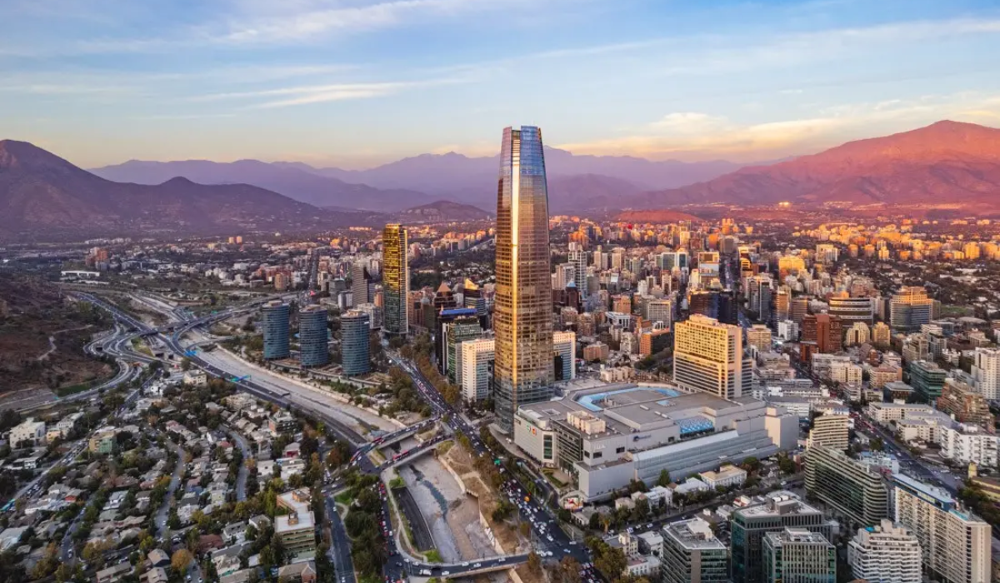

21 DIC 2025
Santiago de Chile

Sky Costanera & Centro Histórico
Primer contacto con Santiago: vista panorámica de la ciudad y paseo por sus calles más clásicas.
15:00 – 21:00 (flexible)
- Subida al mirador Sky Costanera para ver la ciudad desde lo alto (ideal al atardecer).
- Paseo por la Plaza de Armas y sus alrededores: Catedral, edificios históricos y calles peatonales.
- Parada en cafés o heladerías del Paseo Ahumada o Barrio Lastarria para cerrar el día conversando.